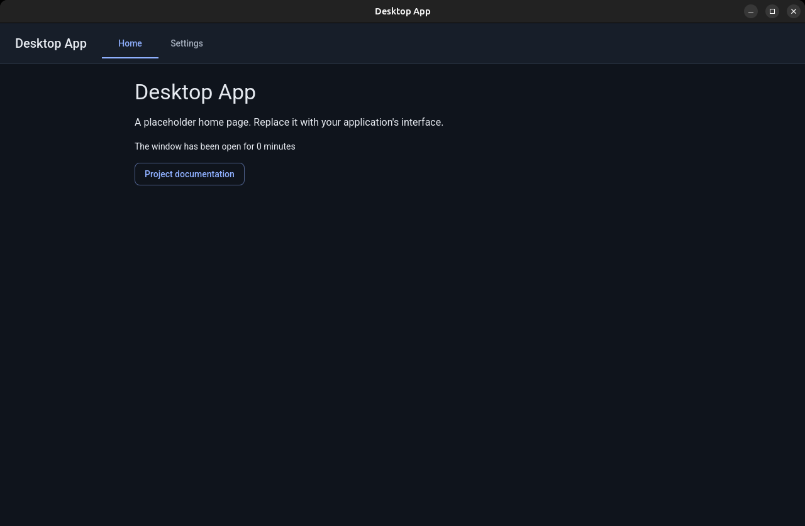

Features
Replace these cards with what your application does.
Three systems
Native packages for Linux, macOS and Windows from one codebase.
Updates
Checks the latest release on GitHub, verifies SHA-256 and installs the new version.
Theme and language
Follows the system light or dark theme; the interface speaks English and Russian.
Tray
Keeps working in the background, starts with the system and sends notifications.
Screenshot

Install
Packages are attached to every release on GitHub. They are not signed: below is how to open them on each system.
Linux
x86_64
sudo apt install ./desktop-app_*_amd64.debsudo dnf install ./desktop-app-*.x86_64.rpmsudo pacman -U desktop-app-*-x86_64.pkg.tar.zstchmod +x desktop-app-*-x86_64.AppImagedeb, rpm and Arch packages install from the file without a key check. Make the AppImage executable and run it; on Ubuntu it asks once for permission to install an AppArmor profile.
macOS
macOS 12 or later · Apple Silicon and Intel
Open the image and drag the application to Applications. It is not notarized: on first launch choose Open from the Finder context menu, or allow it in System Settings → Privacy & Security → Open Anyway. Or remove the quarantine flag:
xattr -dr com.apple.quarantine /Applications/desktop-app.appWindows
Windows 10 and 11 · x64
The installer needs no administrator rights. Neither file is signed: SmartScreen warns about it — choose More info → Run anyway.
SHA-256 checksums are in SHA256SUMS-linux.txt, SHA256SUMS-macos.txt and SHA256SUMS-windows.txt of the same release. An application installed from a package updates itself from its settings page.